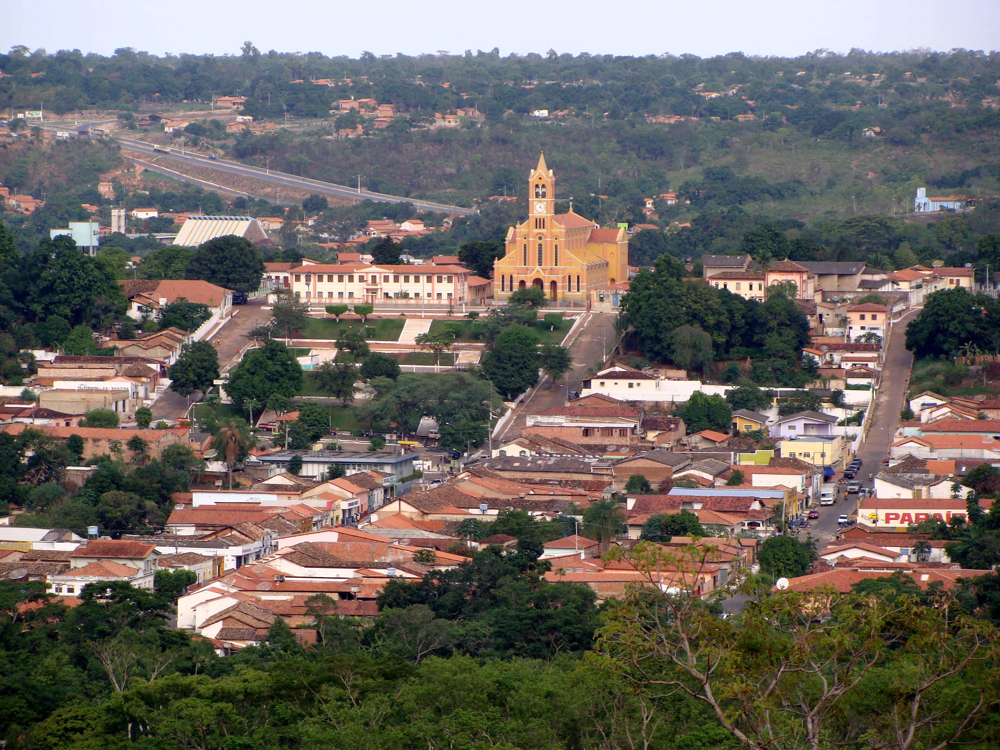
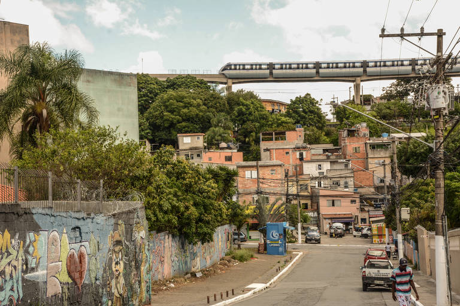
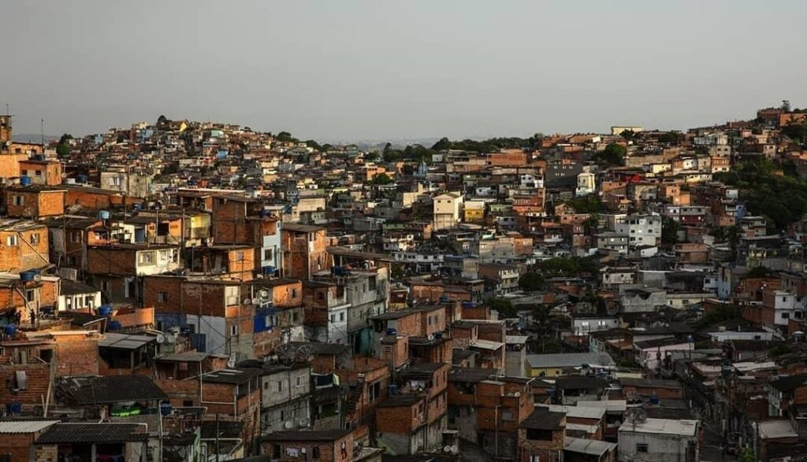
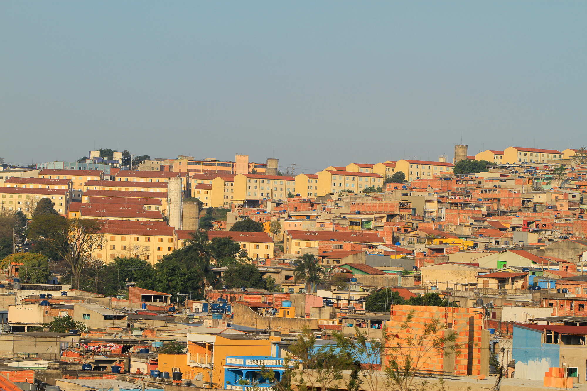
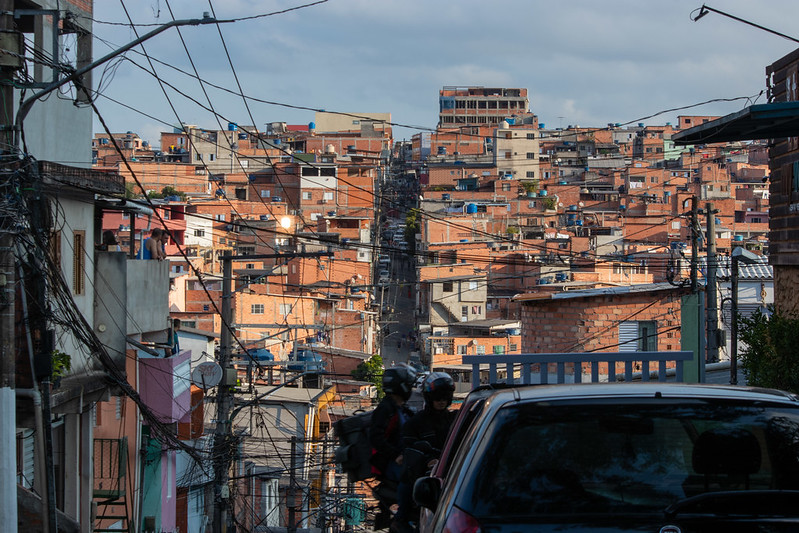
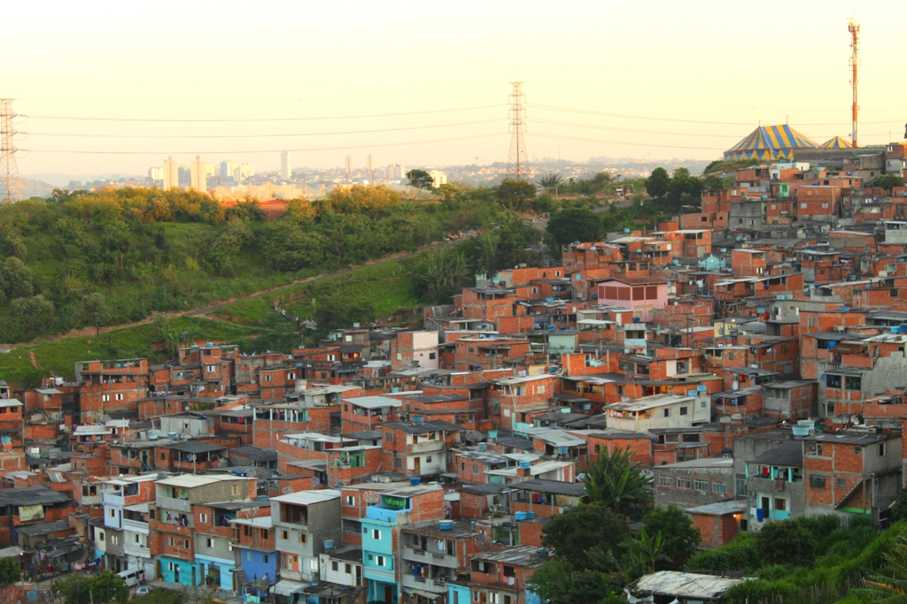
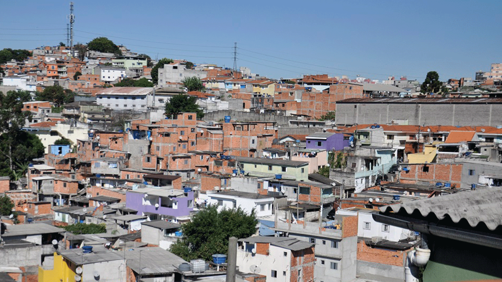
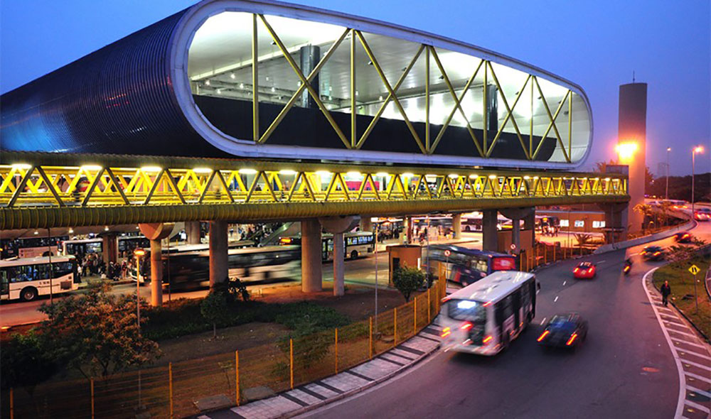
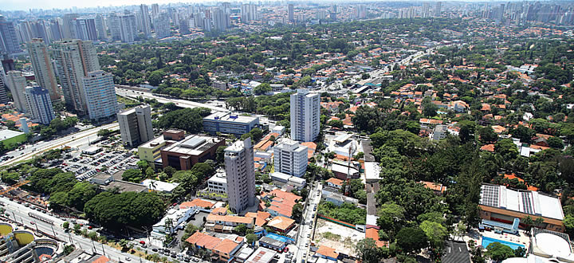

╭₊˚๖ Outros Distritos ๖₊˚
❖ Distritos:
- Grajáu (500.787 Habitantes)

- Sapopemba (296.042 Habitantes)

- Jardim Ângela (295.434 Habitantes)

- Jaraguá (281.824 Habitantes)

- Itaim Paulista (278.026 Habitantes)

- Capão Redondo (275.230 Habitantes)

- Jardim São Luís (267.871 Habitantes)

- Cidade Ademar (266.681 Habitantes)

- Sacomã (247.851 Habitantes)

- Jabaquara (223.780 Habitantes)
